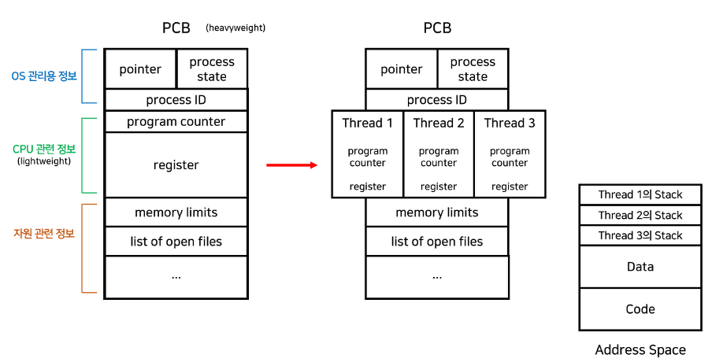
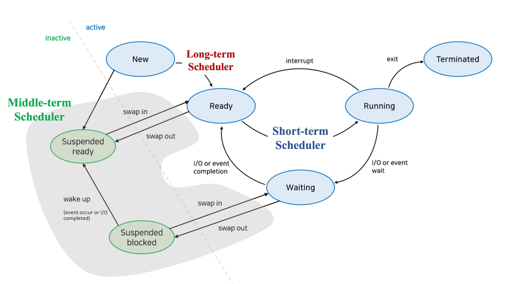
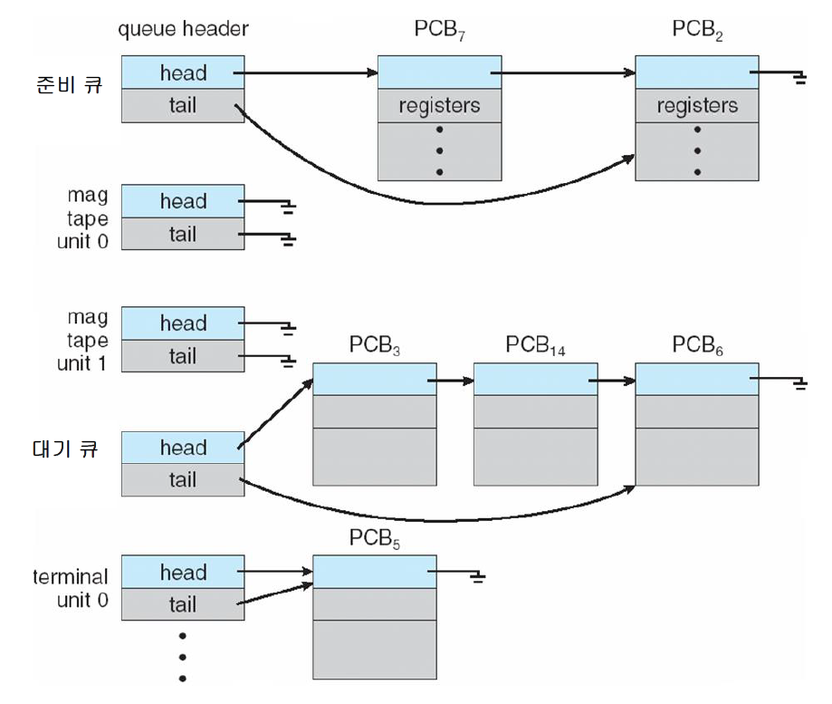

- Process vs Thread
- In Concept
- 프로세스 : 디스크에 있는
프로그램이 실행되기 위하여 메모리에 올라왔을 때의 형태 - 스레드 : 프로세스의 실제 CPU 실행단위
- 프로세스 : 디스크에 있는
- In Structure 
- 프로세스 :
PCB(PID, State, PC, Register, memory limits, file location, etc) +Code+Data+Heap+User Stack+Kernel Stack프로세스의
PCB,Kernel Stack은 메모리의 커널 영역에 저장되며,Code,Data,Heap,User Stack은 유저 영역에 저장된다.
Code Data Heap User Stack 프로그램 바이너리 코드 전역변수 + 정적변수 동적 메모리 할당된 변수 로컬 변수 - 스레드 :
TCB(PC, Register) +Kernel Stack+User Stack, 프로세스의Code,Data,Heap을 공유한다Kernel Stack: 스레드가 커널안에서 명령어를 수행할 때 커널에서 사용되는 별도의 스택
- 프로세스 :
- In Concept
- Multi-thread vs Multi-process
하나의 어플리케이션 내에서 동시성/병렬성을 가져야 할 때, 어느 방법이 좋을까?
- 멀티 스레드 장점 : Context Switch cost가 낮다
프로세스를 생성하거나 Context switching 하는 작업은 너무 무겁고 잦으면 성능 저하가 발생하는데, 스레드를 생성하거나 switching 하는 것은 그에 비해 가볍다.
- 멀티 프로세스 장점 : Critical Section설정이 쉽다
멀티 스레드는 프로세스의 Code, Data, Heap section을 공유한다. 이 때 Critical section이 공유 자원에 존재할 시, 구현관점(mutex, semaphore, monitor)에서 이를 방지해야하기에 까다롭다. 하지만 멀티 프로세스는 서로 공유하는 자원이 없기에 Critical section또한 없음으로 구현이 쉽다
- 멀티 스레드 장점 : Context Switch cost가 낮다
- CPU Scheduler(Short-term scheduler) 하나의 프로세스만 실행할 수 없으니 이를 선점/비선점 방법으로 번갈아 가면서 실행시키기 위한 scheduler
- 선점 scheduler : 프로세스 중지 후 변경가능
- RR(Round Robin) : CPU 선점중인 프로세스를
time_slice가 지나면 Ready큐의 끝으로 다시 넣음. Ready큐에서 가져오는것은 FCFS을 따름.- 장점 : 대기시간이 짧아짐.
n 개의 프로세스가 Ready큐에 있고 할당시간이 q인 경우 각 프로세스는 q 단위로 CPU 시간의 1/n 을 얻는다. 즉, 어떤 프로세스도 (n-1)q이상의 대기시간을 가지지 않음
- 장점 : 대기시간이 짧아짐.
- SRTF(Shortest Remaining Time First) : CPU가 선점중일 때, Reay큐에 더 짧은 시간이 남은 프로세스가 추가되면 현재 프로세스 중단 및 해당 프로세스 실행
- 문제점 : starvation(+CPU 수행시간 측정 불가능)
- RR(Round Robin) : CPU 선점중인 프로세스를
- 비선점 scheduler : 프로세스 중지 불가능, 하나의 프로세스가 CPU를 선점하면 끝까지 수행하여야함
- FCFS(First Come Frist Served) : Ready큐에 도착한 순서대로 CPU 할당
- 문제점 : convoy effect(수행시간이 긴 프로세스가 먼저 도착하면 나머지 프로세스들의 대기시간, 반환시간이 급증함)
- SJF(Shortest Job First) : Ready큐에 가장 짧은 수행시간을 가진 프로세스 먼저 CPU 할당
- 문제점 : starvation(조금 짧은 프로세스들이 상당수라면 대기시간, 반환시간이 기약없음)
- FCFS(First Come Frist Served) : Ready큐에 도착한 순서대로 CPU 할당
- 선점 scheduler : 프로세스 중지 후 변경가능
- Scheduler  
- Long-term scheduler : Job큐에서 Ready큐로 적절하게 프로세스 배치
사분할 시스템(Window, Unix)에서는 Job큐가 따로 존재하지 않고 바로 Ready큐에 적재하기에 장기 스케쥴러는 존재하지 않는다. 즉, 모든 프로세스를 Ready큐에 배치함.
- Short-term scheduler(CPU scheduler) : CPU가 Ready큐의 어떤 프로세스를 실행하게 할지 스케쥴링
- Medium-term scheduler : 메모리 부족일 때, Disk로 “PCB, Code, Data, Heap ,etc.” Swapping
- Long-term scheduler : Job큐에서 Ready큐로 적절하게 프로세스 배치
- Synchronous vs Asynchronous 일반적으로 동기와 비동기의 차이는 메소드를 실행시킴과 동시에 반환 값이 기대되는 경우를 동기 라고 표현하고 그렇지 않은 경우에 대해서 비동기 라고 표현
- 동기
- 비동기
- Critical Section : 둘 이상의 프로세스가 동시에 접근해서는 안되는 공유 자원 or 구역
- 3 things must be satisfied
- Mutual Exclusion : CS에는 하나의 스레드만 점유할 수 있음
- Bounded Waiting : 프로세스를 무한정 기다리게 할 수 없음
- Progress : CS를 사용하고 있는 프로세스가 없다면, 누구나 사용할 수 있음
- Solution
- Mutex Lock : 하나의 프로세스/스레드만 CS에 접근가능하도록 들어가기 전에 Lock하고 들어감. 이후 나올때 release
단점 : 다중처리기 환경에서는 시간적인 효율성 측면에서 적용할 수 없다
- Semaphores : 여러개의 프로세스/스레드가 CS에 접근가능하도록 자원개수를 카운팅함. 즉, 다중 Mutex lock
단점 : Busy Waiting
Busy Waiting : 프로세스/스레드는 진입코드를 반복실행하기에 불필요한 CPU자원이 낭비되는 문제점 - Monitoring : 고급 언어의 설계 구조물로서, 개발자의 코드를 상호배제 하게끔 만든 추상화된 데이터 형태
- Mutex Lock : 하나의 프로세스/스레드만 CS에 접근가능하도록 들어가기 전에 Lock하고 들어감. 이후 나올때 release
- 3 things must be satisfied
- Memory management strategy
- Background of memory management
- Paging
- Segmentation
- Virtual memory
- Background
- Virtual memory usage
- Demand Paging : TLB, PT
- Page replacement algorithm
- Locality of Cache
- Locality
- Caching line
- 고아/좀비 프로세스
- 고아 프로세스 : 자식 프로세스보다 부모 프로세스가 먼저 죽는 경우, 자식 프로세스를 고아 프로세스라고 칭한다.
이 때, 자식 프로세스는 init 프로세스(PID==1)가 새로운 부모 프로세스로 된다.
- 좀비 프로세스 : 자식 프로세스가 exit syscall를 통해 실행을 마쳤지만, 부모 프로세스가 wait syscall를 통해 자식 프로세스의 상태를 반환받지 못했을 때 자식 프로세스를 좀비 프로세스라고 칭한다.
- 고아 프로세스 : 자식 프로세스보다 부모 프로세스가 먼저 죽는 경우, 자식 프로세스를 고아 프로세스라고 칭한다.
- cgroup(Control group)
- cgroups은 프로세스들의 자원의 사용(CPU, 메모리, 디스크 입출력, 네트워크 등)을 제한하고 격리시키는 리눅스 커널 기능이다.
- SLB/GSLB
- SLB(Server Load-Balancing)는 말 그대로 서버들에게 로드밸런싱으로 부하를 줄여주는 기법이다(L4이상)
Load Balancing 기법은 다음과 같은 기법들이 존재
- Round Robin : Round Robin 알고리즘을 바탕으로 Server를 선택
- Least Connection : 현재 Connection의 개수가 가장 적은 Server를 선택
- RTT : RTT(Round Trip Time)이 가장 작은 Server를 선택
- Priority : 우선순위가 높은 Server 선택한다. 만약 우선순위가 높은 서버의 상태가 비정상이라면, 그 다음 우선순위가 높은 서버를 선택
Session 유지가 중요 포인트임, sticky session이나 session clustering으로 일관된 session 관리가 필요함
Sticky session : 클라이언트가 초기에 매칭된 서버와만 이후 모든 패킷들을 라우팅 시킴으로써 session 유지하는 기법
sticky session의 단점은 해당 매칭된 서버가 다운될 떄, session 복구가 불가능함Session clustering : session 서버를 하나 만들어서 이를 통해 일관된 session을 유지하도록 하는 기법
session clustering의 단점은 부하 분산이 제대로 이루어지지 않는다는 점임
- GSLB(Global Server Load-Balancing)은 기존 DNS서비스에 (1) 서버상태 모니터링, (2) DNS 서버별 레이턴시 모니터링 등을 더한 향상된 DNS 서비스임
Service를 제공하는 Server들이 여러 지역에 분리되어 완전히 다른 네트워크에서 운용 될 때 이용하는 기법
위치기반, TTL, 등으로 도메인의 여러 ip중 가까운 ip를 제공
Healthcheck으로 주기적인 서버상태 모니터링 진행
- SLB(Server Load-Balancing)는 말 그대로 서버들에게 로드밸런싱으로 부하를 줄여주는 기법이다(L4이상)